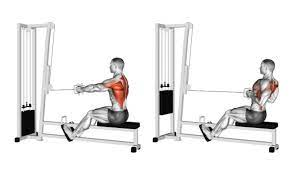

En los ejercicios de los días de Jalón, se realizan movimientos que empujen el peso hacia uno mismo, es decir, que lo jalen hacia la propia persona. En los dias de jalón se enfoca el trabajo en:
- Espalda
- Biceps
- Antebrazos
Además de eso, se categorizan a los movimientos según su movimiento, si son de tracción vertical u horizontal.
Espalda
La espalda es un grupo muscular muy amplio, pero podemos reducirlo a 3 o 4 musculos, los cuales son:
- Dorsal
- Trapecio
- Deltoides Posterior
- Erectores
Los erectores de la cadera son músculos estabilizadores que se pueden trabajar mediante extensiones lumbares o pesos muertos y sirven para fortalecer el Core. Mientras que para el trapecio o el dorsal hay una gran variedad de ejercicios, siendo algunos de los más destacados:
- Jalón de Dorsales
- Remo 1 brazo
- Remo Gironda
- Jalón Unilateral
Y en caso de los Trapecios o la "espalda alta" podemos realizar:
- Remo con barra
- Remo a Caballo
- Encogimientos
- Face Pull
Y como agregado podriamos mencionar a variantes del peso muerto que también trabajan la espalda alta, aunque estos suelen realizarse para darle enfoque a los isquiotibiales en los días de Pierna
Si bien el Deltoides Posterior es un músculo del hombro como tal, se encuentra en la parte trasera del cuerpo y suele recibir más estímulo en los días de Jalón que de Empuje

Biceps
Similar a la terminología del Tricep,
El Biceps esta compuesto por una cabeza larga y una corta, aunque también hay que mencionar al braquial, un músculo que se encuentra por debajo del biceps y que entrenarlo puede favorecer mucho visualmente al aumento del tamaño de este.
La principal función de estos músculos es permitir y ejecutar la flexión del codo. A la vez, la cabeza larga permite la abducción del brazo sobre el tronco, es decir alejarlo; mientras que la cabeza corta se encarga de realizar la aducción del brazo. Por lo tanto sabiendo esto, concluimos en que los 2 músculos se entrenan mediante flexiones de codo en ángulos pegados al torso o separado de este.
Algunos ejercicios clave para el desarrollo de estos músculos son:
- Curl con barra W
- Curl Martillo
- Curl en Polea
- Curl Bayesian
- Curl Predicador
- Chin Ups

Antebrazos
Por último, el antebrazo esta compuesto por varios músculos que pueden ser entrenados mediante:
- Curl Agarre Invertido
- Curl Antebrazo
- Wrist Rotation